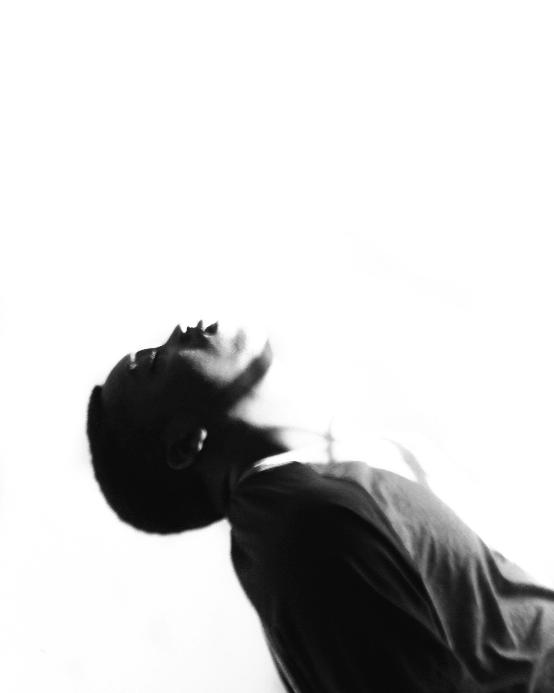
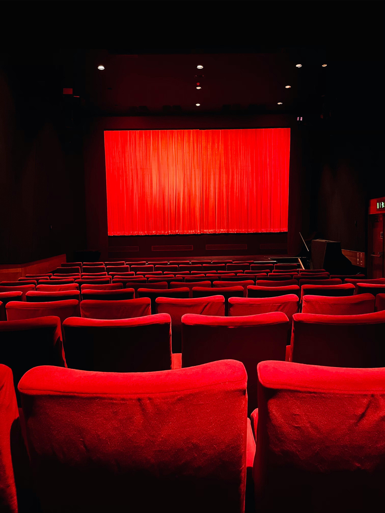
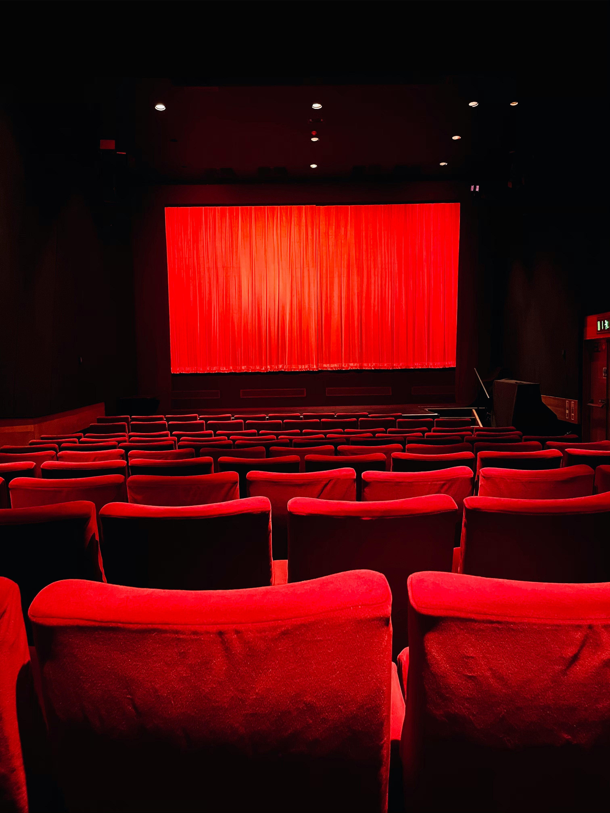

Hoy hablaré sobre cuatro pasatiempos que me identifican
¿A qué me refiero con esto? Bueno suelo investigar mucho sobre nuevas ideas o curiosidades, soy una persona bastante curiosa, me suelen interesar nuevas culturas, nuevas ideas, nuevos pensamientos y más cosas.
En general me considero una persona que se intigra por muchísimos temas.
La combinación entre estadística, tecnología y finanzas me resulta fascinante porque une tres mundos que se potencian entre sí. Me atrae la forma en que los datos pueden revelar patrones ocultos, cómo la tecnología permite analizarlos a gran escala y cómo todo eso se traduce en decisiones y estrategias dentro del ámbito financiero.
Para mí, explorar estas áreas es como armar un rompecabezas donde cada pieza abre la puerta a nuevas posibilidades.


El ejercicio siempre ha sido una forma de equilibrar mi mente y mi cuerpo. Ya sea practicando judo, entrenando en el gimnasio o saliendo a correr, encuentro en la actividad física un espacio para liberar energía, superar límites y desarrollar disciplina.
Cada entrenamiento es una oportunidad para mejorar, no solo en fuerza o resistencia, sino también en enfoque y determinación.

El cine es para mí más que entretenimiento; es una forma de arte que invita a reflexionar. Me gusta sumergirme en historias, analizar la manera en que están construidas y descubrir los mensajes que transmiten, ya sea de forma directa o sutil.
Disfruto tanto de ver una buena película como de debatir y escribir críticas sobre ella, explorando cómo cada elemento —guion, dirección, fotografía o música— contribuye a la experiencia final.
 
